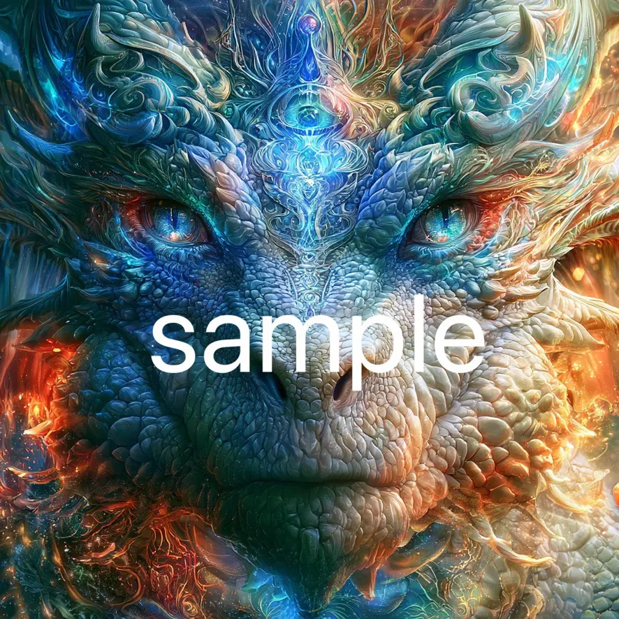
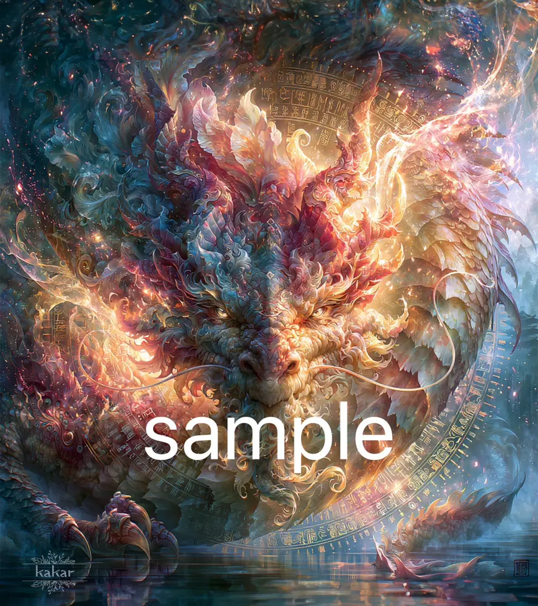
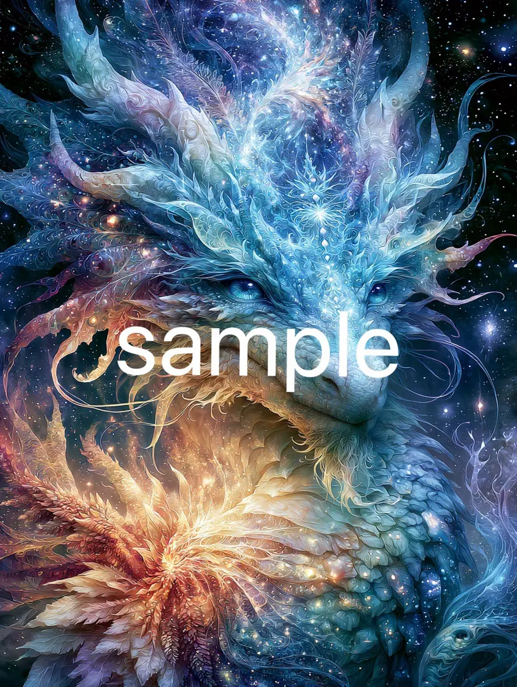
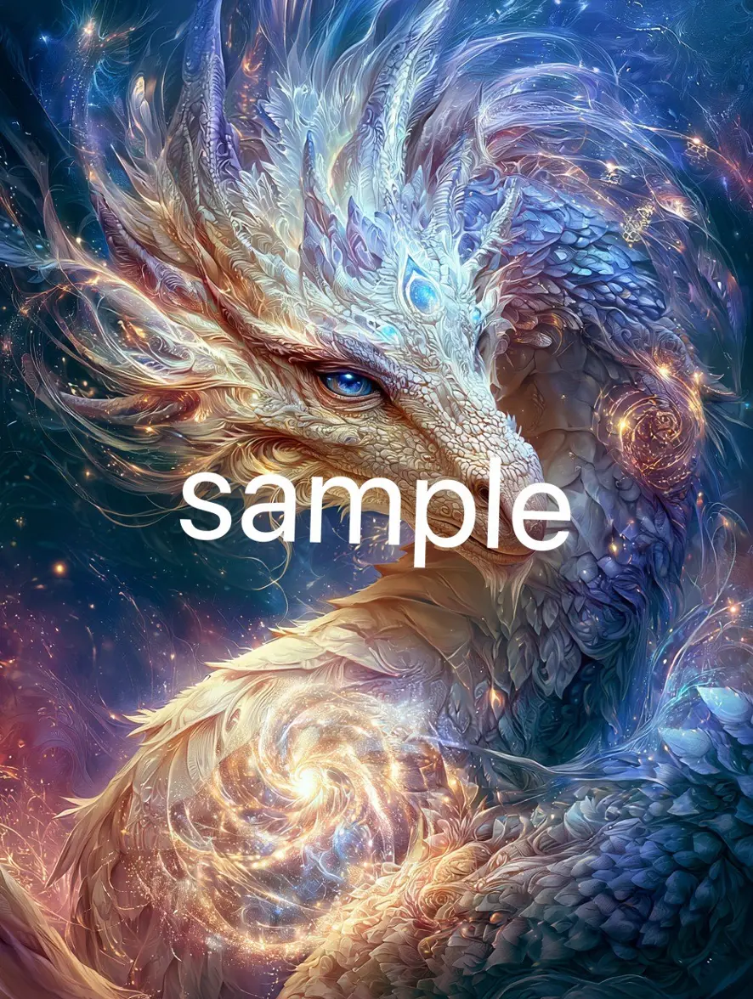
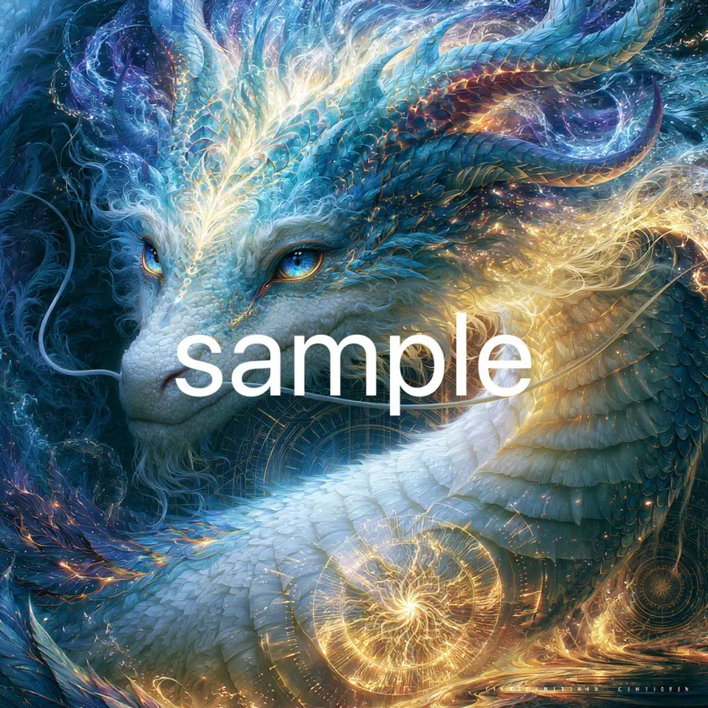
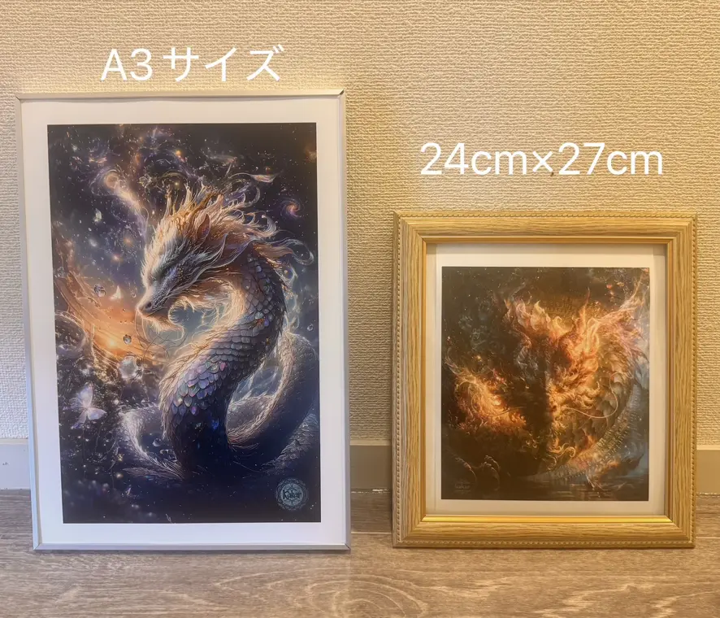
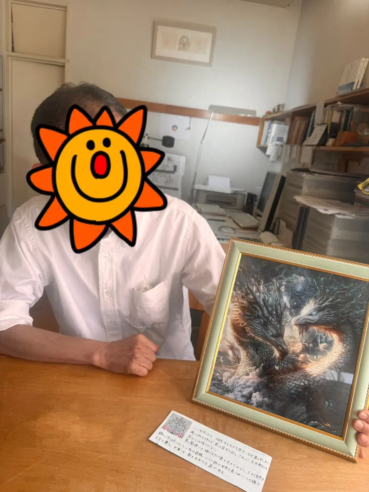

HAPPY ICHIRODO · 05
龍魂アート Kakaraさん

ARTWORK / 01
― りゅうこんアート ― 龍魂アートは、 あなたをリーディングしながら、 魂に宿る龍の本質・力・守護・使命を受け取り、 この世にひとつだけの龍神を描き出す貴方だけの唯一無二の龍神アートです。 龍神は、 前へ進む力、浄化、守護、変容、 そして本来の自分を生きる力を象徴する存在。 今のあなたに必要なエネルギーを映し出し、 眠っていた内なる力を呼び醒ましていきます。 魂本来の輝きと繋がっていく、 そんなサポートとなる一枚を龍神のメッセージと共に心を込めてお届けします。 * この度、龍神さまとお話しをすることが出来るようになり その会話の中から得たメッセージで 貴方の龍神をオリジナルアートにする 『龍魂アート』 を新しいコンテンツとして 令和8年8月8日より 募集を開始します 自分の龍神さまがご興味ある方は ぜひ詳細をご覧ください。

PRICE / 02
．・━━━━━━━━━━━━ † . 龍魂アート ⸻ 【料金】 ⭐️データ画像版＋龍神メッセージ 11,000縁 ※ 5000px × 5000px 350dpi Googleドライブでのお渡しになります。 ⭐️オプション スマホ待受画像 +900縁 ⭐️額装なし、プリントのみ(データ画像付)＋龍神メッセージ A4サイズ 15300縁 + 送料 ⭐️額装版(データ画像付※)＋龍神メッセージ ⚫限定版サイズ（なくなり次第終了） 240mm × 270mm 27,000縁 + 送料 ⚫A3サイズ 33,300縁 + 送料 ⸻

DELIVERY / 03
【納期】 14〜20日前後 ※状況により変動する場合がございます。 あらかじめご了承ください。 ⸻

GIFT / 04
【ご紹介特典】 完成した作品のご感想をくださった方には、 作成した龍神の 『スマホ待受画像』 をプレゼントいたします。 龍神のエネルギーを感じながら、お守りのようにお使いいただける特別な画像です。 ⸻

BEFORE ORDER / 05
【お申込み前に必ずお読みください】 ⚫龍魂アートは、あくまでわたしのリーディングと感性をもとに描かせていただきます。 そのため、どのようなアートになるかはお任せいただく形となります。 オーダー等は承っておりませんので、ご理解いただける方のみお申し込みくださいますようお願いいたします。 ⚫著作権は譲渡いたしません。 お渡ししたアートを商用利用・販売目的で使用することはできません。 ご自身のためにご利用いただくことは可能です。

